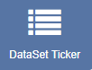
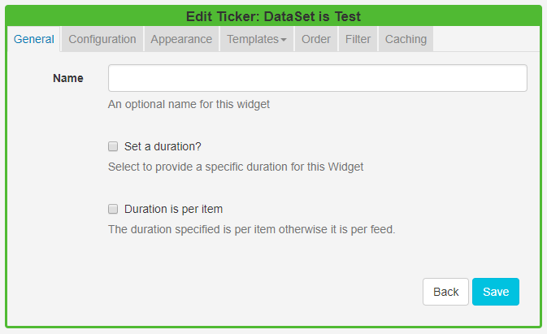
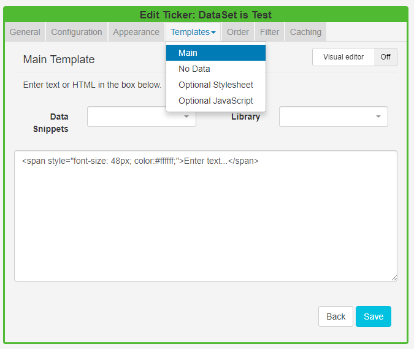
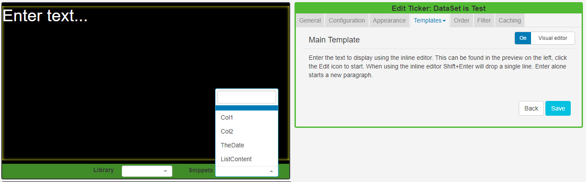

DataSet Ticker (New Features for v2)
The DataSet Ticker Widget allows for DataSet content to be displayed as a Ticker on a Layout. The Ticker module primarily consists of a data source location and a template to apply to the retrieved data.
Ensure that a DataSet has been created and configured prior to using this Widget.
If you are using 1.8, DataSets can be displayed using Tickers. Please use the following link :Ticker 1.8
Add DataSet Ticker
Click on the DataSet Ticker Widget on the toolbar, add / drag to the target Region. 
- Use the drop-down menu to select the DataSet to be used as the source of data for the Ticker.
- Save
You cannot change to a different DataSet once it has been added to a DataSet Ticker. To use an alternative DataSet a new DataSet Ticker would need to be created.
Once saved the Edit Ticker form will open to provide further options.

General
- Provide an optional name
- Choose to override the default duration
- With Duration is per item selected, the configured duration will be extended by the number of items returned by the Data Source.
This should be used with caution as it can create long-running media items. It is recommended to use this setting in conjunction with a setting to limit the number of items shown.
Configuration
Select if returned items should be shown side by side and configure Upper and Lower row limits.
Appearance
- Optionally select a background colour
- Use the drop-down menu to select an Effect to be used to transition between items.
- Set the Speed for the effect selected.
- Enter how many Items should appear on each page if an effect to split items has been selected.
Templates
Click on the Template header to format the Main Template.

Toggle On the Visual editor to use the inline editor. Click in the preview window to open.

The available columns to use in the template can be found in the Snippets menu.
Use the No Data Template to include a message to ensure that your audience is not left with blank displays when there is no data to display.
The Optional Style Sheet is intended for advanced users to 'tweak' the CMS generated output.
Order
Order the DataSet results by using the clause builder or by using an advanced filter clause using SQL syntax, e.g. Name DESC
Filter
Filter the DataSet to exclude/include results by using the clause builder or by using an advanced filter cause using the SQL syntax.
Caching
Players can cache the content of this media type to prevent repeated downloads and off-line playback. Keep this number as high as possible.